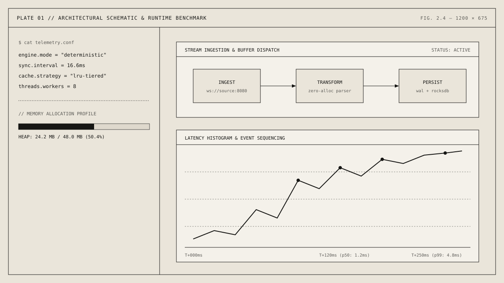

[PROJECT 01 // FLAGSHIP ARCHITECTURE]
STATUS: [PRODUCTION BENCHMARK]

[PROJECT ONE: TELSTAR STORAGE ENGINE]
[An append-only, log-structured merge-tree storage engine written in Go with deterministic write-ahead logging and zero-allocation binary frame parsing.] Designed to sustain 140k writes per second on commodity hardware with p99 tail latency under 4 milliseconds.